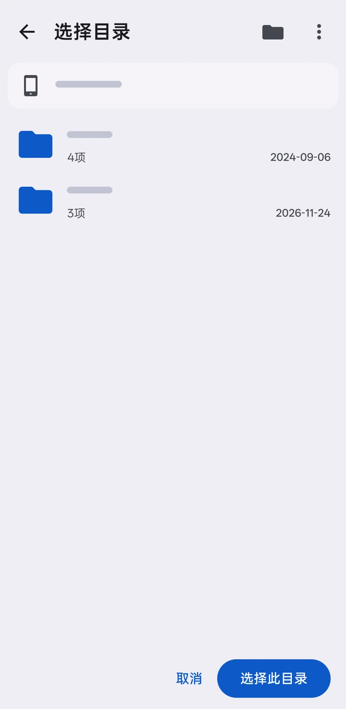
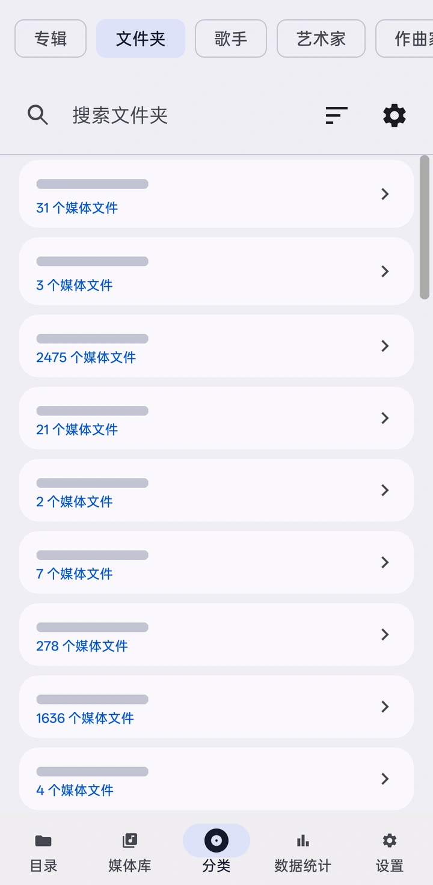
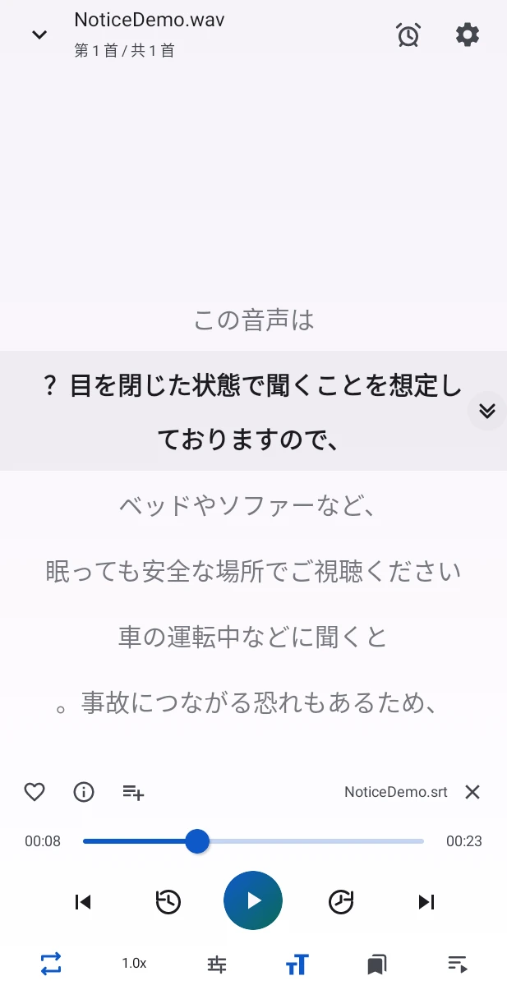
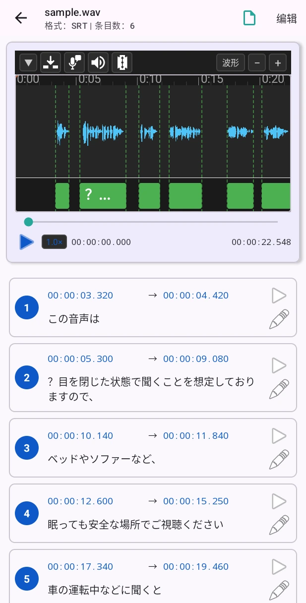
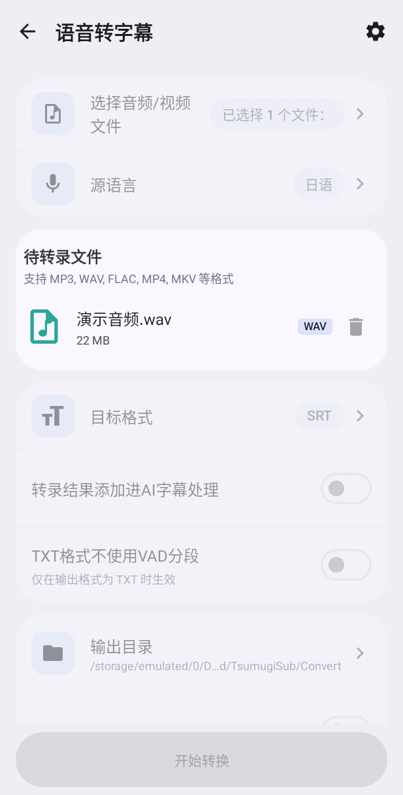
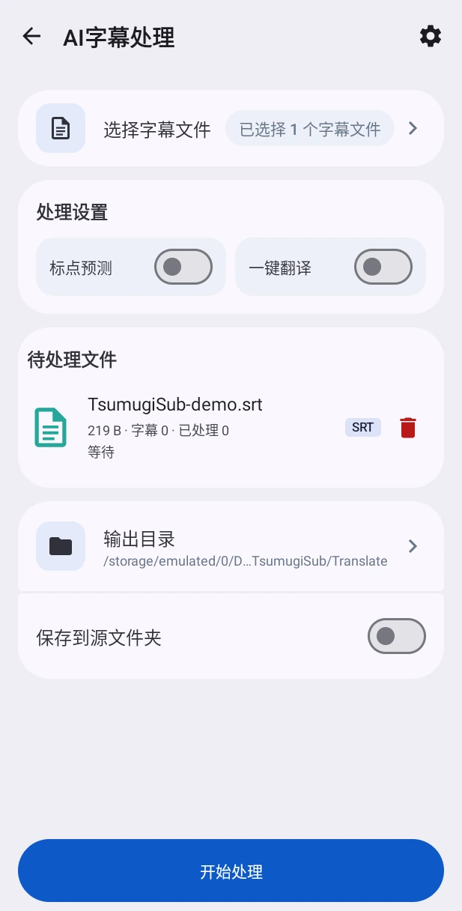

音声模式
在「目录」页开启音声模式后，点开本地音视频即可直接播放。把常听的目录加入媒体库后，可以从「分类」按文件夹或媒体标签找曲目。
-

1. 添加目录
打开「媒体库 → 文件」，点右下角的「＋」。进入要加入的文件夹，再点「选择此目录」。App 会扫描该目录及子目录中的音视频文件。
-

2. 查看自动分类
扫描完成后打开「分类」。App 按文件里的标签整理专辑、歌手、艺术家、作曲家和流派。没有专辑标签的曲目，可在「文件夹」里按目录查找。
-

3. 打开曲目播放
进入一个分类或文件夹，点击曲目即可播放。有字幕时，播放器会随进度高亮当前句，也可以点字幕跳到对应位置。


实际界面
-

波形编辑
对照音频波形调整字幕起止时间。长按快速打轴按钮，移动播放头即可插入字幕。
-

语音转字幕
在 WSA 中使用 SenseVoice 识别日语音频并生成 SRT。
-

字幕翻译
在「AI字幕处理」中添加多个字幕文件，选择「一键翻译」，批量输出译文。


主要功能
- 字幕编辑
- 打开 SRT、LRC、WebVTT 和 TXT，点一下就能改时间和文本。支持批量时间偏移，多选后复制、粘贴、删除，也可以直接编辑源文本。
- 波形打轴
- 打开 mp3、wav、flac 等音频，在波形上拖动字幕调整时间轴，或者长按按钮快速打轴。
- 音声模式
- 从目录直接播放本地音视频，跟随进度查看字幕，也可收藏曲目、调整倍速或设置定时关闭。 查看音声模式
- 语音转字幕
- 支持 Whisper、SenseVoice 等 sherpa-onnx 模型。可以批量处理音频和视频，用 VAD 检测语音片段，运行中随时取消。
- AI 翻译
- 在设置里填入自己的 API Key，选中字幕就能翻译、预览、应用。字幕按顺序发送，沿用同一段对话上下文。下载语言包后，也可离线预览文件夹名称和文本内容的翻译。
- 文稿匹配
- 提供 txt 文稿和对应的音频，一键输出带时间戳的字幕文件。
- 人声分离
- 用 HTDemucs ONNX 模型在手机上分离音轨，可输出人声、鼓、贝斯和其他。
- 音视频转换
- 在常用音频和视频格式之间转换，从视频里提取音频，也可以合并或分离视频与音轨。
- 悬浮窗与状态栏字幕
- 播放音视频时，可以将字幕显示在悬浮窗或状态栏。
- 草稿箱
- 手动保存编辑草稿，随时回来继续。
使用说明
编辑字幕
- 在主界面选择字幕或音频文件，点开进入编辑界面。
- 点击时间轴或文本进行编辑，长按字幕查看更多操作。
- 有音频时，在波形图里拖动字幕改时间，长按快速打轴按钮并移动播放头来打轴。
- 用草稿箱备份，记得及时保存。
语音转字幕
- 下载 sherpa-onnx ASR 模型，解压到好找的文件夹。
- 在模型配置里选择模型文件，需要时调整 VAD 参数。
- 选择音频或视频文件，设置语言、格式和输出目录。
- 开始转换，可以看到进度和日志。
AI 翻译
- 在设置里配置 AI 平台、API Key 和模型。
- 在编辑器里选中要翻译的字幕。
- 长按，选择“AI 翻译”。
- 预览翻译结果，满意后应用。